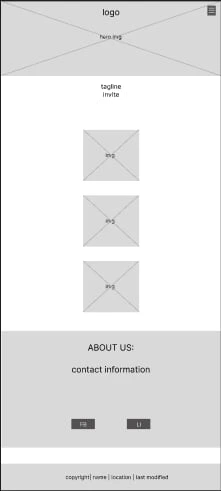
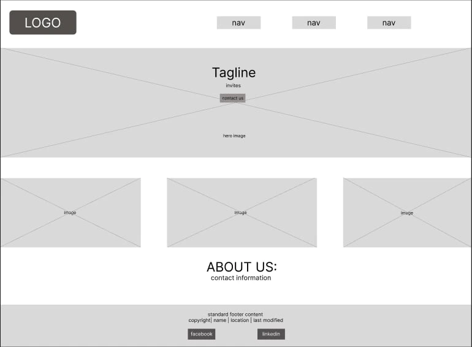

Cuisinero
This name is a play on words combining the english word cuisine and the tagalog word 'Kusinero'. The tagalog word means chef in english and so the whole word means The cooking style of the chef.
Purpose
This sites provides information on what catering services it offers such as meal plans, places, setups and additional services.
FAQ
What kind of foods do you offer?
What's the minimum headcount price for your service?
Color Schema
Text Headings - Tiger Orange
Banners & footer- Dusk Blue
Background - Alabaster Grey
Font/s
Headings, Navigation Menu & Main Title
Normal Texts
Wireframe

